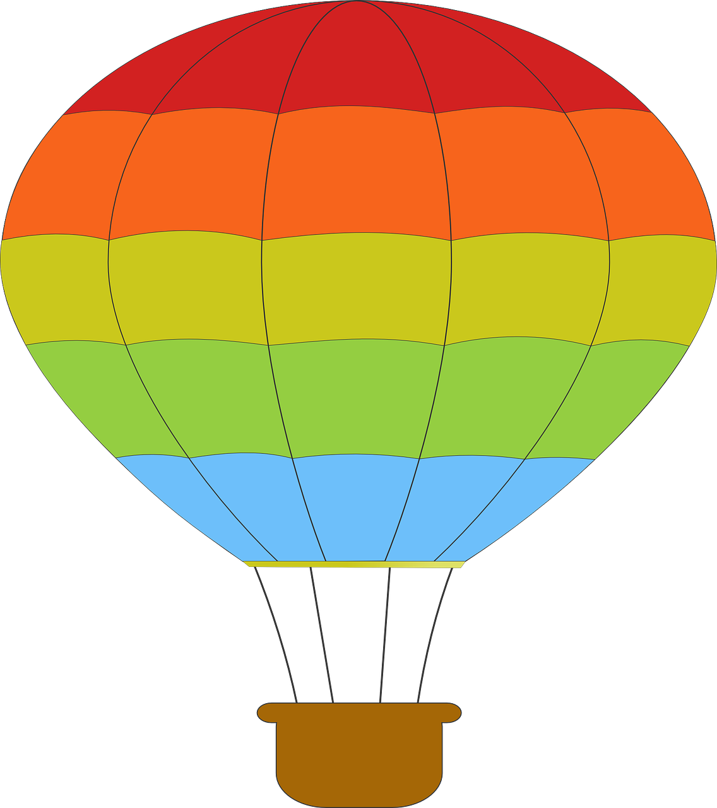

Float und CSS Shapes
Eine wunderbare Heiterkeit hat meine ganze Seele eingenommen, gleich den süßen Frühlingsmorgen, die ich mit ganzem Herzen genieße. Ich bin allein und freue mich meines Lebens in dieser Gegend, die für solche Seelen geschaffen ist wie die meine.
Ich bin so glücklich, mein Bester, so ganz in dem Gefühle von ruhigem Dasein versunken, daß meine Kunst darunter leidet. Ich könnte jetzt nicht zeichnen, nicht einen Strich, und bin nie ein größerer Maler gewesen als in diesen Augenblicken.
Wenn das liebe Tal um mich dampft, und die hohe Sonne an der Oberfläche der undurchdringlichen Finsternis meines Waldes ruht, und nur einzelne Strahlen sich in das innere Heiligtum stehlen, ich dann im hohen Grase am fallenden Bache liege, und näher an der Erde tausend mannigfaltige Gräschen mir merkwürdig werden; wenn ich das Wimmeln der kleinen Welt zwischen Halmen, die unzähligen, unergründlichen Gestalten der Würmchen, der Mückchen näher an meinem Herzen fühle, und fühle die Gegenwart des Allmächtigen, der uns nach seinem Bilde schuf, das Wehen des Alliebenden, der uns in ewiger Wonne schwebend trägt und erhält; mein Freund!
Wenn's dann um meine Augen dämmert, und die Welt um mich her und der Himmel ganz in meiner Seele ruhn wie die Gestalt einer Geliebten - dann sehne ich mich oft und denke : ach könntest du das wieder ausdrücken, könntest du dem Papiere das einhauchen, was so voll, so warm in dir lebt, daß es würde der Spiegel deiner Seele, wie deine Seele ist der Spiegel des unendlichen Gottes! - mein Freund - aber ich gehe darüber zugrunde, ich erliege unter der Gewalt der Herrlichkeit dieser Erscheinungen.